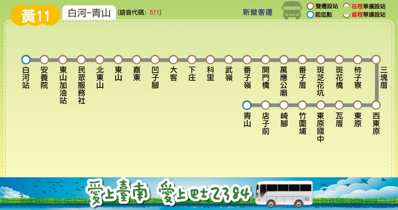

Tainan Bus for FUN
路線圖
路線資訊
票價表
時刻表
轉乘資訊
大台南公車 ─ 黃11 路線圖
Tainan Bus Yellow 11, Route Map

大台南公車 ─ 黃11 路線資訊
Tainan Bus Yellow 11, Route Information
起訖點
白河 － 青山
營運公司
新營客運
首／末班車發車時刻
班距
固定班次
收費方式
里程計費
公車動態資訊
票價表
Ticket Fare
全票
半票
投現
-
-
電子票證
-
-
時刻表
Bus schedule
大台南公車－黃11 主要轉乘點資訊
Tainan bus Yellow 11, Transfer information
白河
黃幹線
、
黃10
、
黃11
、
黃12
、
黃13
、
黃14
、
黃15